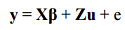
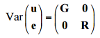
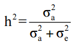
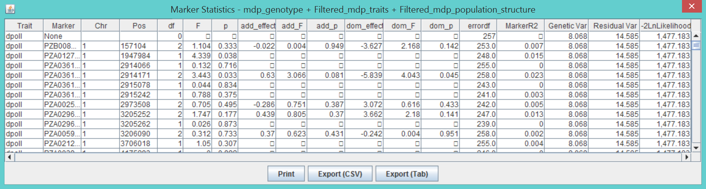
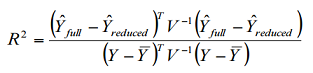
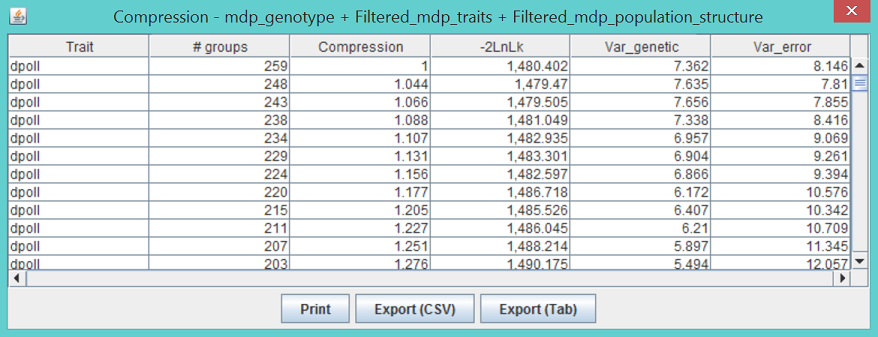

MLM (Mixed Linear Model)¶
This conducts association analysis via a mixed linear model (MLM).
A mixed model is one which includes both fixed and random effects. Including random effects gives MLM the ability to incorporate information about relationships among individuals. When a genetic marker based kinship matrix (K) is used jointly with population structure (Q), the “Q+K” approach improves statistical power compared to “Q” only (9). MLM can be described in Henderson’s matrix notation (22) as follows:

where y is the vector of observations; β is an unknown vector containing fixed effects, including genetic marker and population structure (Q); u is an unknown vector of random additive genetic effects from multiple background QTL for individuals/lines; X and Z are the known design matrices; and e is the unobserved vector of random residual. The u and e vectors are assumed to be normally distributed with null mean and variance of σ^2_a and

where G = (σ^2_a)K with as the additive genetic variance and (σ^2_a)K as the kinship matrix. Homogeneous variance is assumed for the residual effect which means R=I(σ^2_e), where σ^2_e is the residual variance. The proportion of genetic variance over the total variance is defined as heritability (h^2).

When K is derived from pedigrees, the elements of K equal 2*Probability(IBD), where IBD means that two alleles drawn at random are identical by descent. Generally, K calculated from markers is an IBS matrix. The resulting multiplier is then not σ^2_a but some unknown constant times σ^2_a. Some methods for calculating K, such as those implemented in SPaGEDI, actually use markers to develop an estimate of the IBD relationship matrix. For those values of K, the resulting variance estimate can be considered an estimate of σ^2_a as long as the assumptions of the method used to derive K are not violated for the population being analyzed. One implication is that two different K matrices may give very different estimates of σ_a and heritability yet produce the same model fit and test of marker association.
TASSEL implements several methods to improve statistical power and reduce computing time. The Restricted Maximum Likelihood (REML) estimates of σ^2_a and σ^2_e are obtained through the Efficient Mixed-Model Association (EMMA) algorithm (23) which is much faster than the expectation and maximization (EM) algorithm (24).
TASSEL also implements a method called compression which reduces the dimensionality of the kinship matrix to reduce computational time and improve model fitting. When MLM is used without compression (compression = 1), each taxon belongs to its own group. At the other extreme, GLM can be interpreted as maximum compression (compression = n) with all taxa in a single group. In that case, it is not possible to estimate the random effect independently of error and σ^2_a is absorbed into σ^2_e. Between these two extremes, taxa can be grouped using cluster analysis based on kinship. When n individuals are compressed into s clusters (groups), the kinship among individuals is replaced with the kinship among groups. At some grouping levels, dependent on the trait and population being analyzed, this compressed MLM has improved statistical power compared to the regular MLM (4). The optimum grouping with the best model fit for MLM without fitting genetic markers has the best statistical power for an association test of markers (4). TASSEL allows users to specify the compression level (average number of individuals per group), or to have the program determine the optimum grouping.
Similar to GLM, MLM performs an association test for each combination of traits and markers. TASSEL provides users several options: 1) to estimate genetic and residual variance for each combination; 2) to get these estimates once for each trait without fitting genetic markers and then to use those estimates to test markers; 3) to use a prior heritability estimate provided by the user. The second option, named P3D (population parameters previously determined), has the same statistical power as the first option (4). Using the P3D method or using a prior heritability can be much faster than calculating heritability for each marker.
Using MLM is very similar to using GLM. The difference is that in addition to choosing the joint data set (or numerical data set), kinship data must also be highlighted before clicking the MLM button to show the MLM option dialog. The option of “No Compression” is the regular MLM which is equivalent to “Custom level=1”. For data sets with large numbers of taxa, the optimal compression option may be considerably slower than no compression or user supplied compression. This is because the algorithm solves the model once for each of a series of compression levels in order to determine the optimal one.
All MLM analyses create two output tables, model statistics and model effects. If compression is used, the analysis creates three tables.

The statistics table shows the results of the tests for each trait. The first line is for the model with no markers. Following that is a single line for each marker tested. The columns labeled “df”, “F”, and “p” are the degrees of freedom, F, and p-value from the F distribution for the test of the marker. The columns with “add_” are the degrees of freedom, F, and p-value from the F-test on the additive model, and the ones with “dom_” are the degrees of freedom, F, and p-value from the F-test of dominance after the additive model has been fitted. The column “errordf” is the degrees of freedom used for the denominator of the F-test. The column labeled “markerR2” is the R^2 for the marker calculated based on a formula for R^2 for a generalized least squares (GLS) model as shown here.

The columns “Genetic Var”, Residual Var”, and “-2LnLikelihood” list σ^2_a, σ^2_e, and minus two times the model likelihood, respectively. When the P3D option is used, all of the values are the same for a given trait because they are only calculated once. A second table lists the estimated effects of each allele for each marker similar to the output for GLM. The compression results table shown below shows the likelihood, genetic variance, and error variance for each compression level tested during the optimization process. The meaning of groups and compression is discussed above in the description of the compression method. The compression level with the lowest value of -2LnLk is used for testing markers.

Command¶
#!shell
./run_pipeline.pl -fork1 -importGuess mdp_genotype.hmp.txt -FilterSiteBuilderPlugin -siteMinAlleleFreq 0.05 -endPlugin
-fork2 -importGuess mdp_traits.txt
-fork3 -importGuess mdp_population_structure.txt -excludeLastTrait
-fork4 -importGuess mdp_kinship.txt
-combine5 -input1 -input2 -input3 -intersect
-combine6 -input5 -input4 -mlm -mlmVarCompEst P3D -mlmCompressionLevel Optimum -export mlm_output_tutorial
FAQ¶
- How are marker effects estimated?
The alleles column in the effects output actual lists genotypes, where letters for the heterozygotes use the IUPAC nucleotide ambiguity codes. For example, A = AA, C = CC, and M = AC. Because the model fits an intercept, the genotype effects themselves cannot be independently estimated. In order to calculate effect estimates, one of the effects must be set to 0. In the case of bi-allelic loci with all three genotype classes, the heterozygous class is set to 0. For genotypes A, C, and M, the additive effect is estimated as (A - C)/2 (the effect of an allele substitution). The dominance effect is estimated as M - (A + C)/2. If the number of observations of one of the genotype classes is too low (especially if is below 5), the effect estimate can be influenced by outliers and may be unreliable.
Wonky bit: In statistics speak, although the genotype effects themselves are not estimable, some contrasts involving the genotype effects are estimable. This means that while the effect of genotype A is not estimable, the contrast A - M is. Setting M = 0 means A - M = A, which is reported in the effects table. Also, the additive and dominance effects are estimable contrasts.